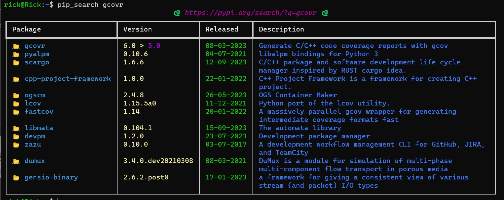
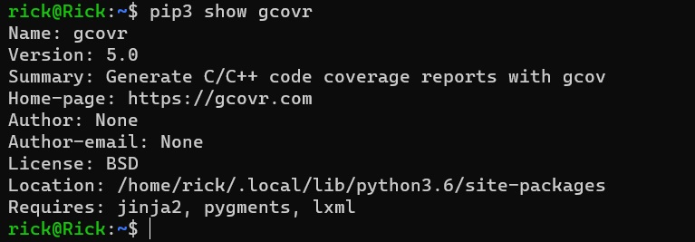
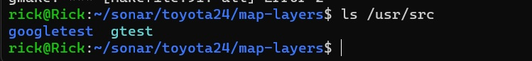
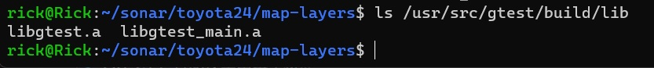
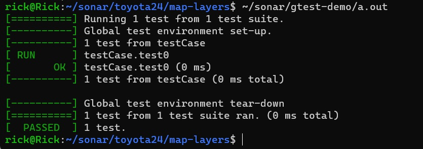
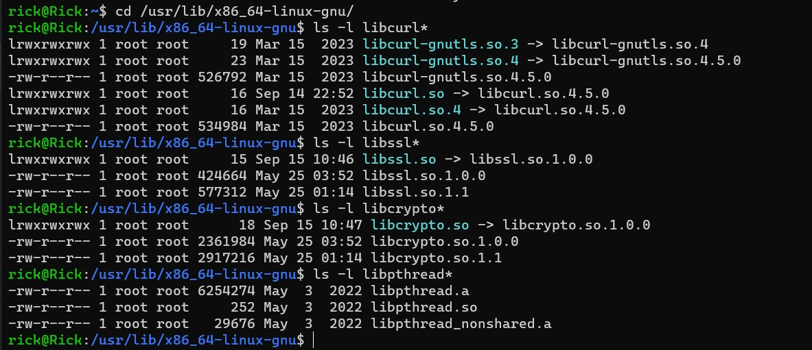
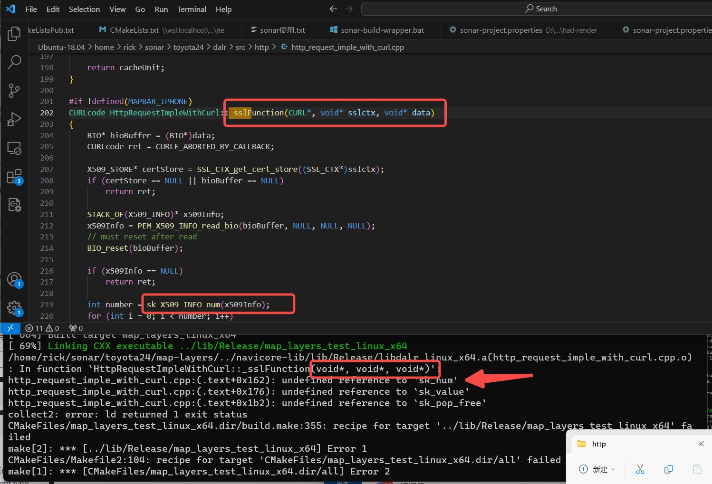

-
下载 Build Wrapper：
{SonarQube URL}/static/cpp/build-wrapper-linux-x86.zip -
下载 SonarScanner：
https://docs.sonarqube.org/latest//analyzing-source-code/scanners/sonarscanner/#running-from-zip-file -
配置环境变量：
export PATH="/home/rick/sonar/build-wrapper-linux-x86:/home/rick/sonar/sonar-scanner-5.0.1.3006-linux/bin:$PATH"注意：
- 配置的
build-wrapper-linux-x86和sonar-scanner-5.0.1.3006-linux文件夹要有 可执行权限 - sonar-scanner-5.0.1.3006-linux 中有 jre 环境，不用再安装 jre 了，但文件夹也要有可执行权限
- 配置的
-
安装 CMake
sudo apt install cmake -
安装 gcovr（计算 gtest 单元测试分支覆盖率）
sudo apt install gcovr注意：
Ubuntu 1804系统中通过apt安装的gcovr版本太低，不支持参数--sonarqube，可通过pip3安装 5.0 版本
pip3 install pip_search pip_search gcovr
pip3 install -U gcovr pip3 show gcovr
-
安装 gtest 库
-
6.1. 获取
gtest源码sudo apt-get install libgtest-dev -
6.2. 查看源码文件
ls /usr/src
-
6.3. 编译生成动态库
cd /usr/src/gtest sudo mkdir build cd build sudo cmake .. sudo make
-
6.4. 将编译生成好的库拷贝到系统目录下
sudo cp libgtest*.a /usr/local/lib -
6.5. 测试验证
编写 gtest.cpp
#include<gtest/gtest.h> int add(int a,int b) { return a+b; } TEST(testCase,test0) { EXPECT_EQ(add(2,3),5); } int main(int argc,char **argv) { testing::InitGoogleTest(&argc,argv); return RUN_ALL_TESTS(); }编译
g++ gtest.cpp -lgtest -lpthread运行
a.out
-
-
Ubuntu 系统中已包含
curl、ssl、crypto、pthread等库，可通过创建所需版本的软连接实现，安装路径在/usr/lib/x86_64-linux-gnu/，可通过以下命令查看已有版本
ls -l libssl*
ls -l libcrypto*
ls -l libcurl*
ls -l libpthread*

- ssl 报错
undefined reference to 'sk_num'
undefined reference to 'sk_value'
undefined reference to 'sk_pop_free'

可降低 ssl 库的版本，需注意 ssl、crypto 版本要匹配
- 查看
curl、openssl版本
curl --versioin

- 安装旧版的
ssl crypto
wget http://security.ubuntu.com/ubuntu/pool/main/o/openssl/libssl1.1_1.1.1-1ubuntu2.1~18.04.20_amd64.deb
或者
curl http://security.ubuntu.com/ubuntu/pool/main/o/openssl/libssl1.0.0_1.0.2g-1ubuntu4_amd64.deb -o libssl1.0.0
sudo dpkg -i libssl1.0.0
进入下面的网站，可以查找所需的组件自行下载安装，下载时注意 i386（x86） 和 amd64（x64） 的区别
http://security.ubuntu.com/ubuntu/pool/main/o/openssl1.0/
http://security.ubuntu.com/ubuntu/pool/main/o/openssl/libssl1.0.0_1.0.2g-1ubuntu4_amd64.deb
- 构建
cmake -B build -G "Unix Makefiles" -DMAPBAR_COMPILE_FOR_STD=1 -DCMAKE_BUILD_TYPE=Release -DMAPBAR_PLATFORM="linux_x64" -DMBMAKE_BUILD_TEST=1
- 编译
build-wrapper-linux-x86-64 --out-dir reports cmake --build build/ --config Release
- 运行可执行文件
编译完后需运行一下 test 工程的可执行文件，再执行下面的命令
- 分析单元测试覆盖率
gcovr --sonarqube -o reports/coverage.xml
- 添加配置文件
在项目根目录创建文件 sonar-project.properties 并添加如下文本内容
sonar.projectKey=test
sonar.login=sqp_7f7b3255b802865006af3b0a61bbef19fe209641
sonar.scm.disabled=true
sonar.sources=src
sonar.test=test
sonar.cfamily.build-wrapper-output=reports
sonar.coverageReportPaths=reports/coverage.xml
sonar.host.url={SonarQube URL}
- 扫描并将结果上传到网站
sonar-scanner
参考
- ubuntu 下安装 Gtest 和测试
- Ubuntu 安装 OpenGL
- 【OpenGL】Ubuntu 20.04 配置 OpenGL 环境
- 解决Ubuntu22.04缺少libssl.so.1.1问题
- ubuntu 安装 openssl 1.1
- Ubuntu20.04 安装curl3和curl4
- 在 Ubuntu Linux 上安装 Deb 文件的 3 种方法 | Linux 中国
- SonarSource sample C and C++ projects with SonarCloud or SonarQube analysis configured
- linux-cmake-gcovr-gh-actions-sc